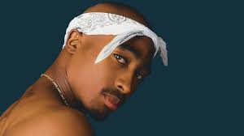

# Hip Hop dos Anos 1990 aos 2000: A Era de Ouro da Cultura Urbana
## Introdução O hip hop é mais do que um gênero musical; trata-se de um movimento cultural que engloba música, dança, arte e expressão social. Surgido nos bairros periféricos de Nova York durante a década de 1970, o hip hop encontrou nos anos 1990 e início dos anos 2000 seu período de maior crescimento e consolidação. Essa fase é frequentemente chamada de "Era de Ouro", pois foi marcada por inovação artística, diversidade de estilos, sucesso comercial e grande influência cultural. Durante esse período, o rap tornou-se uma das formas mais importantes de expressão das comunidades urbanas, abordando temas como racismo, desigualdade social, violência, pobreza, política, identidade cultural e resistência. Ao mesmo tempo, conquistou espaço na indústria musical global, transformando seus artistas em referências culturais para milhões de pessoas. --- # A Evolução do Hip Hop nos Anos 1990 Na década de 1990, o hip hop passou por uma transformação significativa. O gênero deixou de ser visto apenas como uma manifestação cultural das periferias e tornou-se uma força dominante na música mundial. Os avanços tecnológicos na produção musical permitiram a criação de batidas mais elaboradas, utilizando samplers, sintetizadores e técnicas inovadoras de mixagem. Além disso, o surgimento de gravadoras especializadas em rap ajudou a ampliar a distribuição dos álbuns e a popularidade dos artistas. Durante esse período, diferentes regiões dos Estados Unidos desenvolveram estilos próprios. A Costa Leste, especialmente Nova York, valorizava letras complexas e narrativas detalhadas. Já a Costa Oeste, liderada pela Califórnia, destacou-se pelo som mais pesado e influenciado pelo G-Funk, caracterizado por batidas lentas e linhas de baixo marcantes. --- # A Rivalidade entre Costa Leste e Costa Oeste Um dos acontecimentos mais marcantes da história do hip hop foi a rivalidade entre artistas da Costa Leste e da Costa Oeste dos Estados Unidos. A Costa Oeste era representada principalmente por Tupac Shakur e pela gravadora Death Row Records. Já a Costa Leste tinha como principal representante The Notorious B.I.G., ligado à Bad Boy Records. O conflito começou através de músicas, entrevistas e disputas comerciais, mas acabou se tornando uma rivalidade intensa que gerou tensão em toda a indústria musical. Os assassinatos de Tupac em 1996 e de Notorious B.I.G. em 1997 chocaram o mundo e marcaram profundamente a história do rap. Após essas tragédias, muitos artistas passaram a defender a união dentro do movimento hip hop e o foco na produção artística. --- # Os Principais Artistas da Época Tupac Shakur
Tupac foi um dos artistas mais influentes da história da música. Suas letras abordavam problemas sociais, desigualdade racial, violência urbana e experiências pessoais. Ele conseguia combinar mensagens políticas com sucessos comerciais, tornando-se um símbolo de resistência e autenticidade. Entre suas músicas mais conhecidas estão "California Love", "Changes" e "Dear Mama". --- ## The Notorious B.I.G. Conhecido também como Biggie Smalls, destacou-se por sua habilidade narrativa e por retratar a realidade das ruas de Nova York. Seu estilo influenciou diversas gerações de rappers. Canções como "Juicy", "Big Poppa" e "Hypnotize" são consideradas clássicos do hip hop. --- ## Nas Nas é amplamente reconhecido pela qualidade poética de suas letras. Seu álbum de estreia, Illmatic, é frequentemente apontado como um dos melhores discos de rap já produzidos. Suas músicas exploram questões sociais, desigualdade econômica e a vida nos bairros periféricos de Nova York. --- ## Jay-Z Além do sucesso musical, Jay-Z tornou-se um dos empresários mais bem-sucedidos da indústria do entretenimento. Suas letras frequentemente tratam de ambição, empreendedorismo e superação. Ele ajudou a transformar o rap em um fenômeno comercial global. --- ## Eminem Eminem surgiu no final dos anos 1990 e rapidamente conquistou o público por sua técnica, velocidade e criatividade. Sua ascensão também foi importante por ampliar o alcance do hip hop para novos públicos ao redor do mundo. Seu álbum The Marshall Mathers LP tornou-se um dos discos de rap mais vendidos da história. --- # Álbuns que Marcaram uma Geração Diversos álbuns lançados entre os anos 1990 e 2000 ajudaram a definir o som do hip hop moderno. ### Illmatic (1994) Considerado uma obra-prima do rap pela profundidade das letras e pela qualidade da produção. ### Ready to Die (1994) Retrata a realidade das ruas do Brooklyn e ajudou a revitalizar o rap da Costa Leste. ### All Eyez on Me (1996) Primeiro álbum duplo da história do rap e um dos mais vendidos do gênero. ### The Slim Shady LP (1999) Responsável por apresentar Eminem ao público mundial. ### The Blueprint (2001) Influenciou a produção musical dos anos seguintes e consolidou Jay-Z como um dos maiores artistas do rap. --- # Os Elementos da Cultura Hip Hop O hip hop é tradicionalmente formado por quatro elementos principais: ### MC (Rap) Representa a expressão verbal através das rimas e da poesia urbana. ### DJ Responsável pela criação das batidas, mixagens e manipulação dos discos. ### Breakdance Estilo de dança caracterizado por movimentos acrobáticos e expressivos. ### Grafite Forma de arte visual utilizada para transmitir mensagens sociais e identidades culturais. Esses elementos trabalham juntos para formar uma cultura baseada na criatividade, resistência e expressão coletiva. --- # Moda Hip Hop dos Anos 90 e 2000 A moda tornou-se uma das principais formas de identidade do movimento. As tendências mais populares incluíam: * Calças largas (baggy) * Camisetas oversized * Bonés de aba reta * Jaquetas esportivas * Correntes de ouro * Tênis de basquete * Roupas inspiradas em equipes esportivas Muitas dessas tendências influenciaram a moda mundial e continuam presentes até hoje. --- # O Hip Hop nos Anos 2000 Nos anos 2000, o hip hop alcançou novos patamares comerciais. O gênero passou a dominar as paradas musicais internacionais e influenciar outros estilos, como pop, R&B e música eletrônica. Novos artistas surgiram, enquanto veteranos expandiram seus negócios para áreas como moda, cinema e tecnologia. O hip hop deixou de ser apenas um movimento urbano e tornou-se uma das indústrias culturais mais lucrativas do mundo. Além disso, a internet começou a desempenhar um papel importante na divulgação das músicas, aproximando artistas e fãs e acelerando a globalização da cultura hip hop. --- # Conclusão Entre os anos 1990 e 2000, o hip hop viveu um período de enorme crescimento artístico, cultural e comercial. Foi uma época marcada por grandes artistas, álbuns históricos, transformações sociais e uma influência que ultrapassou os limites da música. O legado dessa era permanece vivo até hoje, inspirando novas gerações de músicos, dançarinos, artistas visuais e admiradores da cultura urbana em todo o mundo.